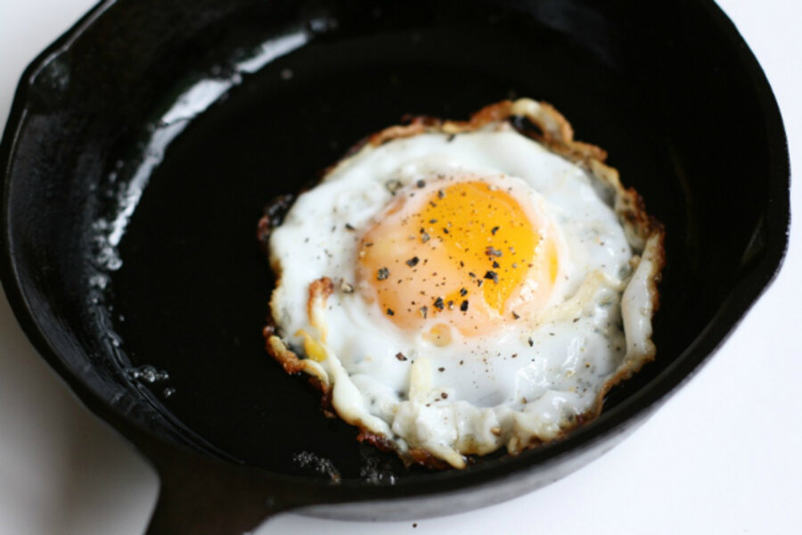

Asian Style Fried Eggs

Description
The following recipe describes how to make asian style crispy fried eggs.
While traditional fried eggs involve cooking the eggs and low-medium heat until
the whites are just set to maintain a soft texture, many street vendors in asian countries
will cook eggs in woks on much higher temperatures with liberal amounts of oil in order to
get a crispy texture in on the whites while maintaining a runny/soft yolk.
Ingredients
- 1 egg (or as many as you like)
- vegetable/olive oil
- salt and pepper
- soy/seasoning sauce
- any toppings you would like
Instructions
- Add liberal amount of oil to pan and heat over medium-high
- Once hot, add egg to pan. Allow for whites to settle.
- When eggs start to sizzle and pop, tilt pan towards yourself and spoon
hot oil onto whites such that whites get a bubbly texture on the yolk side.
- Continue until bottom of eggs are browned and yolk is to your desired texture.
- Plate with salt, pepper, and other seasonings/sauces.
Back to homepage